Sketch Topics
- What is Sketch?
- Tour of the Interface
- Basic Features of Sketch
- Exporting Designs
- Plugins
- Design a Mobile App
What is Sketch?
Sketch is an native Mac app intended to create web and mobile app designs.
- ✨ Native app
- ✨ Vector based tool
- ✨ Plugins = Magic
- ✨ Integrates well with Prototyping tools
- 👎 Only available on Macs
Tour of the Interface
Toolbar
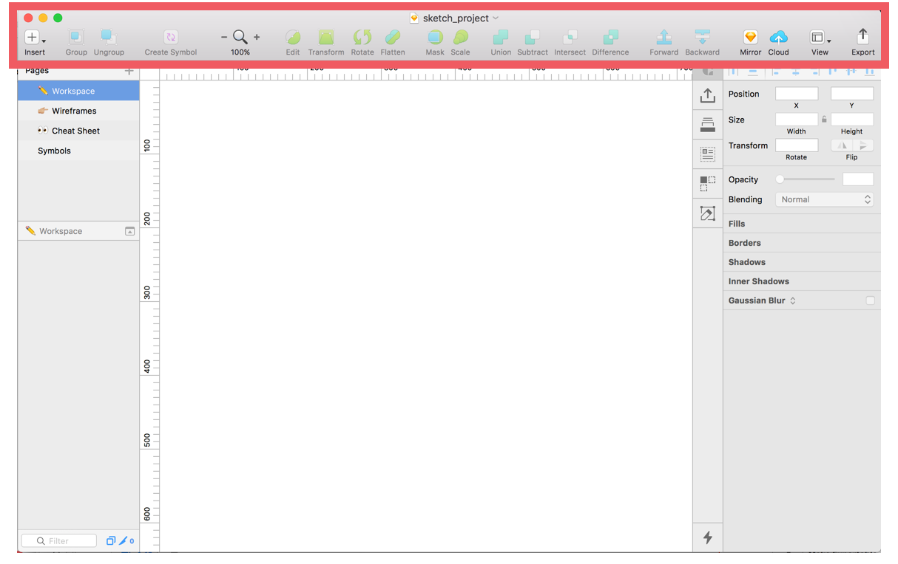
Tour of the Interface
Infinite Canvas
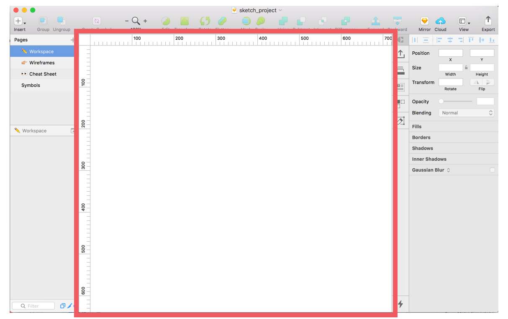
Tour of the Interface
Layer List
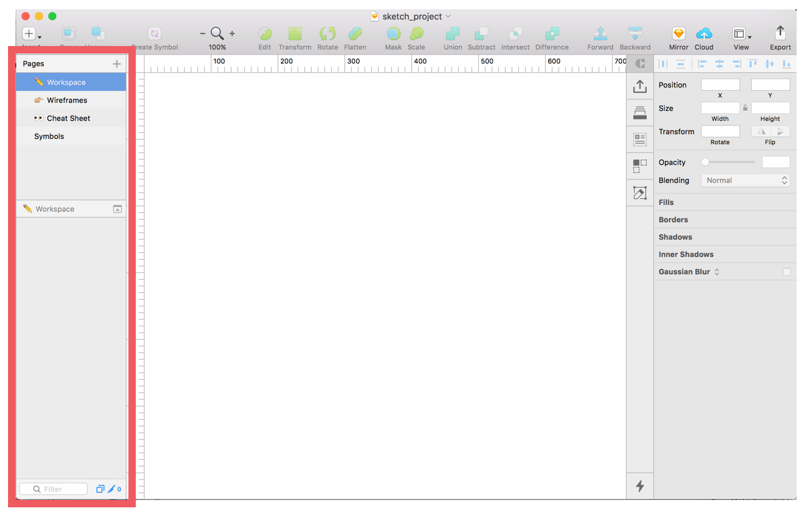
Tour of the Interface
Inspector
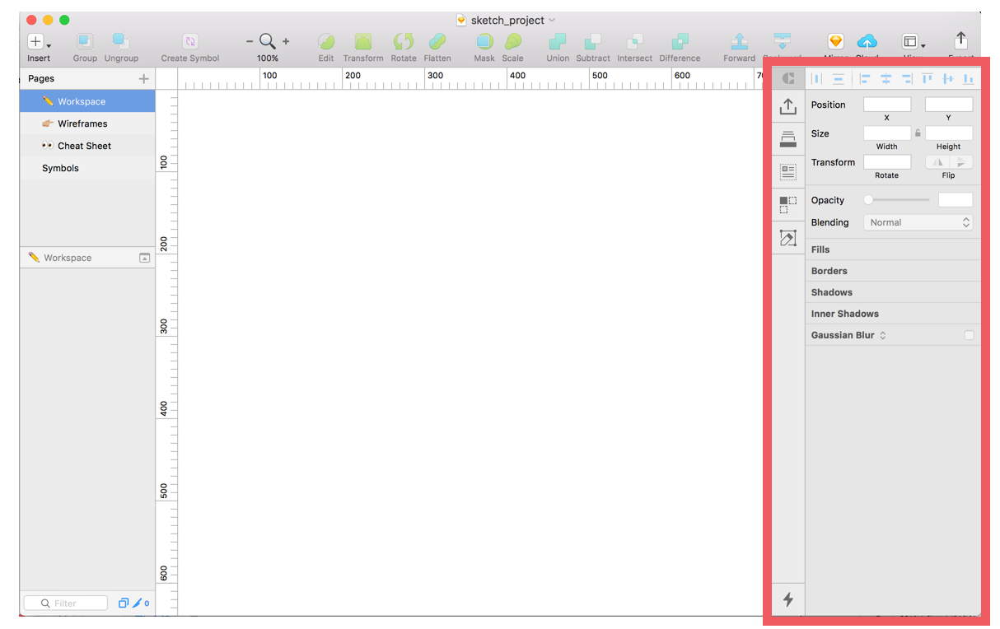
Basic Features of Sketch:
- Framing your project with Artboards
- Moving Around the Project
- Creating, Editing, Grouping Layers
- Fast & Easy Alignments
- Styles! Shadows, Borders, and more
- Text and Layer Style
- Making Reusable symbols (buttons, etc)
Framing your project with Artboards
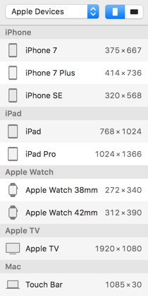
- Preset Options
- Landscape or Portrait
- Resize Options
- Multiple Boards
(option + click to duplicate)
Framing your project with Artboards
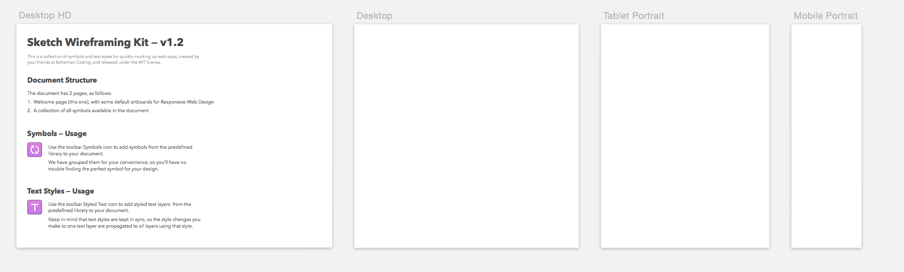
Find the Responsive Wireframe Kit at:
File > New From Template... > Web Design
Moving Around the Project
- CMD + 1 to see entire project
- CMD + 2 to zoom in on selection
- CMD + and CMD - to zoom in and out
- CMD + . is Present mode
Let's Develop It! 💻
Go to Workspace Page. Create an artboard or two and rename to "Practice Artboard" and "Practice Arboard 2". Practice zooming in and out of your artboards.
Creating, Editing, Grouping Layers
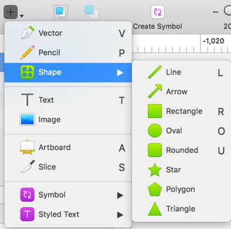
- CMD + Click to select layers
- Shift + Option to scale
- Option + Click to drag
- CMD + G to group layers
Creating, Editing, Grouping Layers
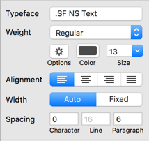
- "T" = adds text
- Auto vs. Fixed text
- Text Options
Fast & Easy Alignments
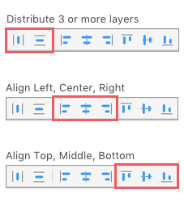
Let's Develop It! 💻
Add some shapes and text to your artboard. Group and rename layers appropriately. Try using the keyboard commands in the previous slides.
Suggestion: Go to your favorite website and try to recreate the header or another UI component from that site.
Styles! Shadows, Borders, and more
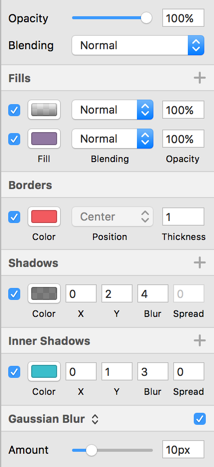
- Multiple Fills & Borders
- Shadows
- Edit > Set as Default
Let's Develop It! 💻
Have some fun adding colors, borders and other styles to your current artboards.
Suggestion: Try adding different fills including an image with a gradient overlay, try adding fills to text layers including image, add some drop shadows to your design.
Text and Layer Styles
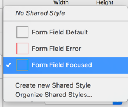
- Reusable styles for layers and text
- Update Across the Project
- Use "/" to create folders
Making Reusable Symbols
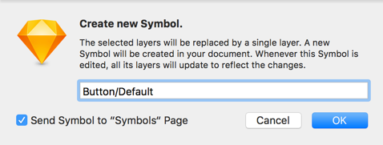
- Start by making a group of layers you want to repeat
- Use "/" to create folders
- Symbols Page - Artboard sizes matter
- Overrides are your friend
- Nested Symbols
Let's Develop It! 💻
Let's start with a basic button symbol.
Create a button style with text. Create multiple colors and styles to switch between in your project.
Exporting Designs: Layers and Artboards
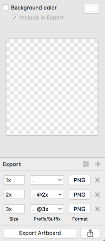
- Multple formats and sizes
- Insert Slices
- Apply background color
- Set presets
Exporting Designs: Mirror
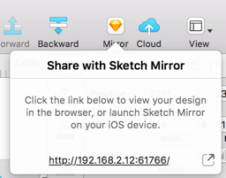
- View design in iOS app or browser
- Live updates
- Great for user testing or presenting designs
Exporting Designs: Sketch Cloud
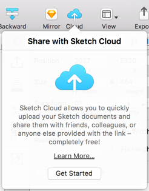
- Need an account
- Share link with team
- Anyone can comment
- Great for collaboration